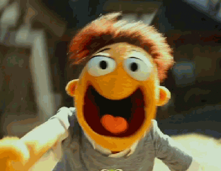

The chaos that has ensued from the coronavirus hysteria has overwhelmed our lives. If Oregon follows close behind other states that have already put in place protocols of quarantined than Oregon is essentially screwed.
Humans as a whole need to band together and show compassion. The panic buying culture that has evolved has turned into "every man for themselves". We are living in scary and uncertain times